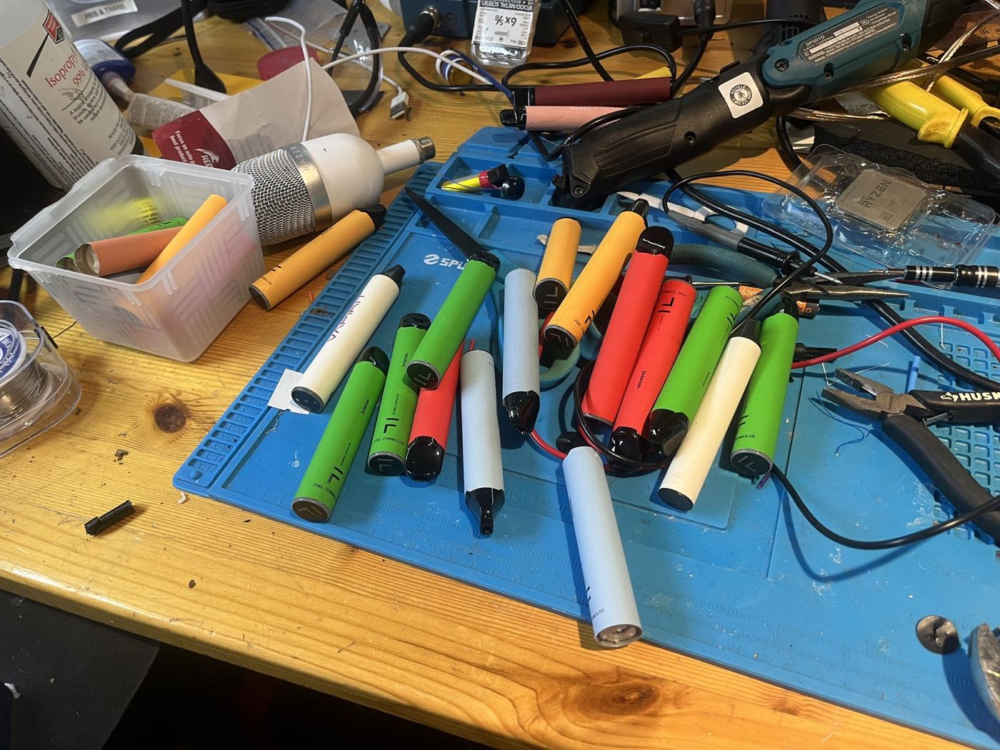
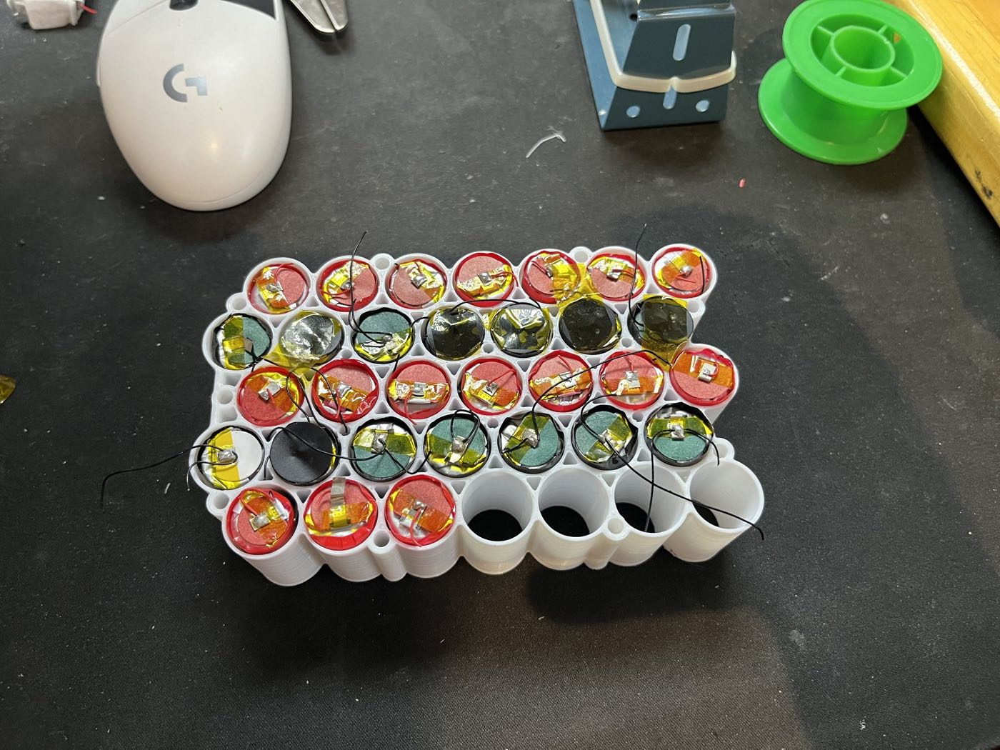
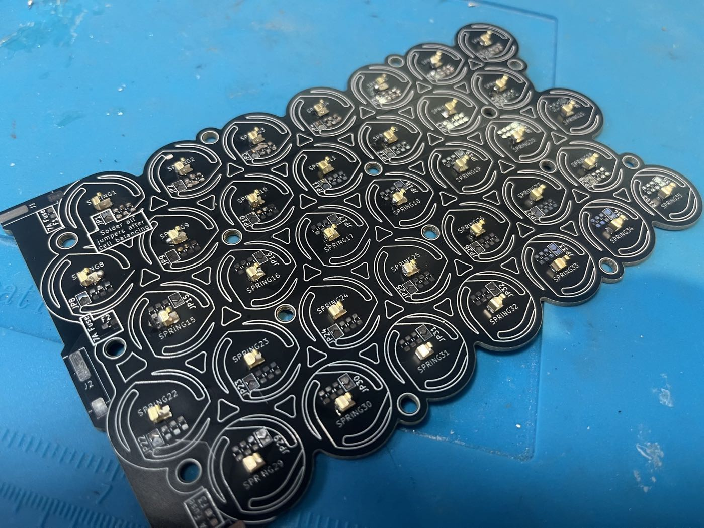
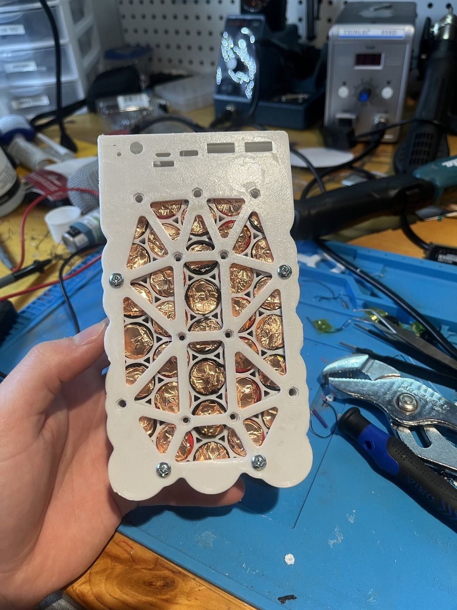
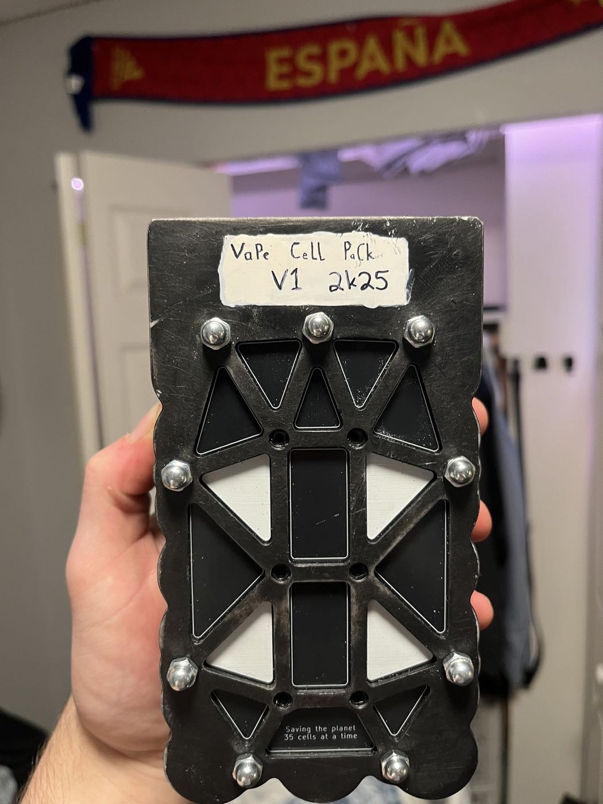

Overview
With the rise of "disposable" vapes, I kept running across discarded vapes littered at parks and public places. I was surprised to learn that they actually contain rechargeable lithium-ion cells, which are used once and thrown away, since the vapes have no way to recharge them.
When I saw a design online from a British YouTuber for a battery pack built from these cells, I knew I had to build one myself. It seemed like a fun project, and a great way to give these batteries a second life instead of having them pollute my town or end up in a landfill. I asked my friends for their old vapes and started collecting the ones I found littered instead of just recycling them. Eventually I had around 75 vapes, and found that one common model held 1000 mAh "18350" cells that would work best. After testing every cell, I ended up with just over the 35 working cells I needed.


Design and build
The original design didn't work as-is, since the vapes sold in Britain use different cells from those in Canada, so I modified the PCB and the 3D model of the case to fit my cells. Once I landed on a design that worked, I printed the cell holder and case to check the fit, then custom ordered the PCB from a manufacturer. I chose not to get it pre-assembled and sourced the components myself, as I wanted to get better at SMD soldering and try using solder paste to place many tiny components at once.


After building the PCB, I assembled the bank with a power bank control board that allows up to 100 W from its USB-C port, and tested it. The first iteration worked well, and it became my main power bank thanks to its large capacity (around 30,000 mAh) and high enough output to charge my laptop.
The first case was printed in PLA, which wasn't very durable and was getting damaged by everyday use, so I reprinted it in carbon fibre infused PETG. I also added spacers over some of the screw heads on one side, since they stuck out past the flat end of the case and were scratching my desk whenever the bank slid around.


Overall, I'm very proud of the finished product. I use it regularly as my main power bank for my laptop and phone, and it has held up well to daily wear and tear. I also love that it reuses batteries that would otherwise have been thrown away, and that I learned so much about PCB design and SMD soldering along the way.